Chapter 21: Chapter XIX. on Finding Areas by Integrating¶
21.1 Chapter XIX. on Finding Areas by Integrating¶
ONE use of the integral calculus is to enable us to ascertain the values of areas bounded by curves.
Let us try to get at the subject bit by bit.
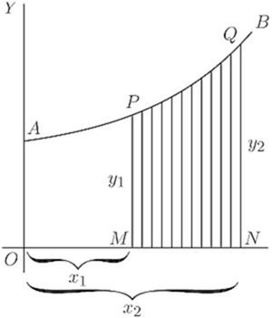
Let (Fig. 52) be a curve, the equation to which is known. That is,  in this curve is some known function of
in this curve is some known function of  . Think of a piece of the curve from the point to the point
. Think of a piece of the curve from the point to the point  .
.
Let a perpendicular be dropped from , and another from the point . Then call and , and the ordinates and . We have thus marked out the area that lies beneath the piece . The problem is, how can we calculate the value of this area?
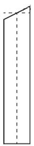
The secret of solving this problem is to conceive the area as being divided up into a lot of narrow strips, each of them being of the width . The smaller we take , the more of them there will be between and . Now, the whole area is clearly equal to the sum of the areas of all such strips. Our business will then be to discover an expression for the area of any one narrow strip, and to integrate it so as to add together all the strips. Now think of any one of the strips. will be like this: being bounded between two vertical sides, with a flat bottom , and with a slightly curved sloping top. Suppose we take its average height as being ; then, as its width is , its area will be . And seeing that we may take the width as narrow as we please, if we only take it narrow enough its average height will be the same as the height at the middle of it. Now let us call the unknown value of the whole area , meaning surface. The area of one strip will be simply a bit of the whole area, and may therefore be called . So we may write If then we add up all the strips, we get
So then our finding depends on whether we can integrate for the particular case, when we know what the value of is as a function of .
For instance, if you were told that for the particular curve in question , no doubt you could put that value into the expression and say: then I must find .
That is all very well; but a little thought will show you that something more must be done. Because the area we are trying to find is not the area under the whole length of the curve, but only the area limited on the left by , and on the right by , it follows that we must do something to define our area between those 'limits.'
This introduces us to a new notion, namely that of integrating between limits. We suppose to vary, and for the present purpose we do not require any value of below (that is ), nor any value of above (that is ). When an integral is to be thus defined between two limits, we call the lower of the two values the inferior limit, and the upper value the superior limit. Any integral so limited we designate as a definite integral, by way of distinguishing it from a general integral to which no limits are assigned.
In the symbols which give instructions to integrate, the limits are marked by putting them at the top and bottom respectively of the sign of integration. Thus the instruction will be read: find the integral of between the inferior limit and the superior limit .
Sometimes the thing is written more simply Well, but how do you find an integral between limits, when you have got these instructions?
Look again at Fig. 52 (p. 204). Suppose we could find the area under the larger piece of curve from  to , that is from
to , that is from  to , naming the area . Then, suppose we could find the area under the smaller piece from to , that is from to , namely the area . If then we were to subtract the smaller area from the larger, we should have left as a remainder the area , which is what we want. Here we have the clue as to what to do; the definite integral between the two limits is the difference between the integral worked out for the superior limit and the integral worked out for the lower limit.
to , naming the area . Then, suppose we could find the area under the smaller piece from to , that is from to , namely the area . If then we were to subtract the smaller area from the larger, we should have left as a remainder the area , which is what we want. Here we have the clue as to what to do; the definite integral between the two limits is the difference between the integral worked out for the superior limit and the integral worked out for the lower limit.
Let us then go ahead. First, find the general integral thus: and, as is the equation to the curve (Fig. 52), is the general integral which we must find.
Doing the integration in question by the rule (p. 193), we get and this will be the whole area from 0 up to any value of that we may assign.
Therefore, the larger area up to the superior limit will be and the smaller area up to the inferior limit will be
Now, subtract the smaller from the larger, and we get for the area the value,
This is the answer we wanted. Let us give some numerical values. Suppose , and and . Then the area is equal to
Let us here put down a symbolic way of stating what we have ascertained about limits: where is the integrated value of corresponding to , and that corresponding to .
All integration between limits requires the difference between two values to be thus found. Also note that, in making the subtraction the added constant has disappeared.
Examples.
(1) To familiarize ourselves with the process, let us take a case of which we know the answer beforehand. Let us find the area of the triangle (Fig. 53), which has base and height . We know beforehand, from obvious mensuration, that the answer will come 24.
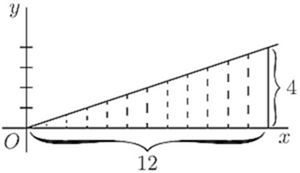
Now, here we have as the "curve" a sloping line for which the equation is
The area in question will be
Integrating (p. 192), and putting down the value of the general integral in square brackets with the limits marked above and below, we get ![StartLayout 1st Row 1st Column area 2nd Column equals left bracket one third dot one half x squared right bracket Subscript x equals 0 Superscript x equals 12 Baseline plus upper C 2nd Row 1st Column Blank 2nd Column equals left bracket StartFraction x squared Over 6 EndFraction right bracket Subscript x equals 0 Superscript x equals 12 Baseline plus upper C 3rd Row 1st Column Blank 2nd Column equals left bracket StartFraction 12 squared Over 6 EndFraction right bracket minus left bracket StartFraction 0 squared Over 6 EndFraction right bracket 4th Row 1st Column Blank 2nd Column equals StartFraction 144 Over 6 EndFraction equals 24 period Ans period EndLayout](img/1645.svg)
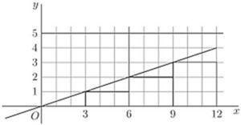
Let us satisfy ourselves about this rather surprising dodge of calculation, by testing it on a simple example. Get some squared paper, preferably some that is ruled in little squares of one-eighth inch or one-tenth inch each way. On this squared paper plot out the graph of the equation,
The values to be plotted will be:
|
0 | 3 | 6 | 9 | 12 |
|---|---|---|---|---|---|
|
0 | 1 | 2 | 3 | 4 |
The plot is given in Fig. 54.
Now reckon out the area beneath the curve by counting the little squares below the line, from as far as on the right. There are 18 whole squares and four triangles, each of which has an area equal to squares; or, in total, 24 squares. Hence 24 is the numerical value of the integral of between the lower limit of and the higher limit of .
As a further exercise, show that the value of the same integral between the limits of and is 36.
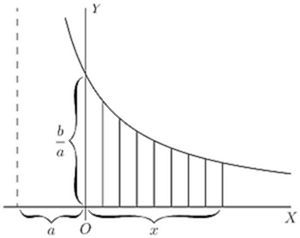
(2) Find the area, between limits and , of the curve . ![StartLayout 1st Row 1st Column Area 2nd Column equals integral Subscript x equals 0 Superscript x equals x 1 Baseline y dot d x equals integral Subscript x equals 0 Superscript x equals x 1 Baseline StartFraction b Over x plus a EndFraction d x 2nd Row 1st Column Blank 2nd Column equals b left bracket log Subscript epsilon Baseline left parenthesis x plus a right parenthesis right bracket Subscript 0 Superscript x 1 Baseline plus upper C 3rd Row 1st Column Blank 2nd Column equals b left bracket log Subscript epsilon Baseline left parenthesis x 1 plus a right parenthesis minus log Subscript epsilon Baseline left parenthesis 0 plus a right parenthesis right bracket 4th Row 1st Column Blank 2nd Column equals b log Subscript epsilon Baseline StartFraction x 1 plus a Over a EndFraction period Ans period EndLayout](img/1648.svg)
N.B.—Notice that in dealing with definite integrals the constant always disappears by subtraction.
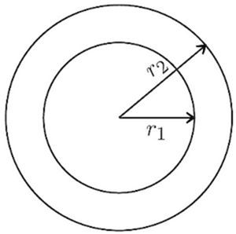
Let it be noted that this process of subtracting one part from a larger to find the difference is really a common practice. How do you find the area of a plane ring (Fig. 56), the outer radius of which is and the inner radius is ? You know from mensuration that the area of the outer circle is ; then you find the area of the inner circle, ; then you subtract the latter from the former, and find area of ring ; which may be written  mean circumference of ring × width of ring.
mean circumference of ring × width of ring.
(3) Here's another case - that of the die-away curve (p. 153). Find the area between and  , of the curve (Fig. 57) whose equation is
, of the curve (Fig. 57) whose equation is
The integration (p. 198) gives ![StartLayout 1st Row 1st Column Blank 2nd Column equals b left bracket minus epsilon Superscript negative x Baseline right bracket Subscript 0 Superscript a Baseline 2nd Row 1st Column Blank 2nd Column equals b left bracket minus epsilon Superscript negative a Baseline minus left parenthesis minus epsilon Superscript negative 0 Baseline right parenthesis right bracket 3rd Row 1st Column Blank 2nd Column equals b left parenthesis 1 minus epsilon Superscript negative a Baseline right parenthesis period EndLayout](img/1657.svg)
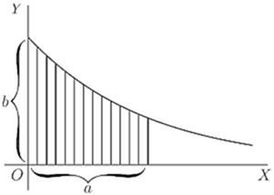
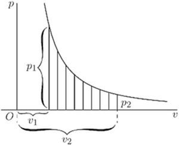
(4) Another example is afforded by the adiabatic curve of a perfect gas, the equation to which is , where  stands for pressure, for volume, and
stands for pressure, for volume, and  is of the value 1.42 (Fig. 58).
is of the value 1.42 (Fig. 58).
Find the area under the curve (which is proportional to the work done in suddenly compressing the gas) from volume to volume .
Here we have ![StartLayout 1st Row 1st Column a r e a 2nd Column equals integral Subscript v equals v 1 Superscript v equals v 2 Baseline c v Superscript negative n Baseline dot d v 2nd Row 1st Column Blank 2nd Column equals c left bracket StartFraction 1 Over 1 minus n EndFraction v Superscript 1 minus n Baseline right bracket Subscript v 1 Superscript v 2 Baseline 3rd Row 1st Column Blank 2nd Column equals c StartFraction 1 Over 1 minus n EndFraction left parenthesis v 2 Superscript 1 minus n Baseline minus v 1 Superscript 1 minus n Baseline right parenthesis 4th Row 1st Column Blank 2nd Column equals StartFraction negative c Over 0.42 EndFraction left parenthesis StartFraction 1 Over v 2 Superscript 0.42 Baseline EndFraction minus StartFraction 1 Over v 1 Superscript 0.42 Baseline EndFraction right parenthesis period EndLayout](img/1661.svg)
An Exercise.
Prove the ordinary mensuration formula, that the area of a circle whose radius is , is equal to .
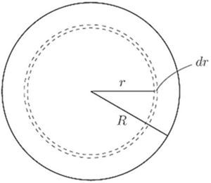
Consider an elementary zone or annulus of the surface (Fig. 59), of breadth , situated at a distance from the centre. We may consider the entire surface as consisting of such narrow zones, and the whole area will simply be the integral of all such elementary zones from centre to margin, that is, integrated from to .
We have therefore to find an expression for the elementary area of the narrow zone. Think of it as a strip of breadth , and of a length that is the periphery of the circle of radius , that is, a length of . Then we have, as the area of the narrow zone,
Hence the area of the whole circle will be:
Now, the general integral of is . Therefore,
Another Exercise.
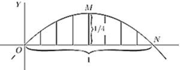
Let us find the mean ordinate of the positive part of the curve , which is shown in Fig. 60. To find the mean ordinate, we shall have to find the area of the piece , and then divide it by the length of the base . But before we can find the area we must ascertain the length of the base, so as to know up to what limit we are to integrate. At  the ordinate has zero value; therefore, we must look at the equation and see what value of will make . Now, clearly, if is will also be 0, the curve passing through the origin ; but also, if ; so that
the ordinate has zero value; therefore, we must look at the equation and see what value of will make . Now, clearly, if is will also be 0, the curve passing through the origin ; but also, if ; so that  gives us the position of the point .
gives us the position of the point .
Then the area wanted is ![StartLayout 1st Row 1st Column Blank 2nd Column equals integral Subscript x equals 0 Superscript x equals 1 Baseline left parenthesis x minus x squared right parenthesis d x 2nd Row 1st Column Blank 2nd Column equals left bracket one half x squared minus one third x cubed right bracket Subscript 0 Superscript 1 Baseline 3rd Row 1st Column Blank 2nd Column equals left bracket one half minus one third right bracket minus left bracket 0 minus 0 right bracket 4th Row 1st Column Blank 2nd Column equals one sixth period EndLayout](img/1677.svg)
But the base length is 1.
Therefore, the average ordinate of the curve .
[N.B.—It will be a pretty and simple exercise in maxima and minima to find by differentiation what is the height of the maximum ordinate. It must be greater than the average.]
The mean ordinate of any curve, over a range from to , is given by the expression,
One can also find in the same way the surface area of a solid of revolution.
Example.
The curve is revolving about the axis of . Find the area of the surface generated by the curve between and .
A point on the curve, the ordinate of which is , describes a circumference of length , and a narrow belt of the surface, of width , corresponding to this point, has for area . The total area is
Areas in Polar Coordinates.
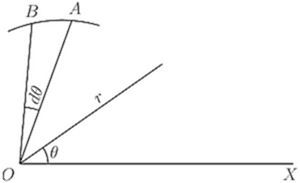
When the equation of the boundary of an area is given as a function of the distance of a point of it from a fixed point (see Fig. 61) called the pole, and of the angle which makes with the positive horizontal direction , the process just explained can be applied just as easily, with a small modification. Instead of a strip of area, we consider a small triangle , the angle at being , and we find the sum of all the little triangles making up the required area.
The area of such a small triangle is approximately or ; hence the portion of the area included between the curve and two positions of corresponding to the angles and is given by
Examples.
(1) Find the area of the sector of 1 radian in a circumference of radius  inches.
inches.
The polar equation of the circumference is evidently . The area is
(2) Find the area of the first quadrant of the curve (known as "Pascal's Snail"), the polar equation of which is . ![StartLayout 1st Row 1st Column Area 2nd Column equals one half integral Subscript theta equals 0 Superscript theta equals StartFraction pi Over 2 EndFraction Baseline a squared left parenthesis 1 plus cosine theta right parenthesis squared d theta 2nd Row 1st Column Blank 2nd Column equals StartFraction a squared Over 2 EndFraction integral Subscript theta equals 0 Superscript theta equals StartFraction pi Over 2 EndFraction Baseline left parenthesis 1 plus 2 cosine theta plus cosine squared theta right parenthesis d theta 3rd Row 1st Column Blank 2nd Column equals StartFraction a squared Over 2 EndFraction left bracket theta plus 2 sine theta plus StartFraction theta Over 2 EndFraction plus StartFraction sine 2 theta Over 4 EndFraction right bracket Subscript 0 Superscript StartFraction pi Over 2 EndFraction Baseline 4th Row 1st Column Blank 2nd Column equals StartFraction a squared left parenthesis 3 pi plus 8 right parenthesis Over 8 EndFraction period EndLayout](img/1694.svg)
Volumes by Integration.
What we have done with the area of a little strip of a surface, we can, of course, just as easily do with the volume of a little strip of a solid. We can add up all the little strips that make up the total solid, and find its volume, just as we have added up all the small little bits that made up an area to find the final area of the figure operated upon.
Examples.
(1) Find the volume of a sphere of radius .
A thin spherical shell has for volume (see Fig. 59, p. 214); summing up all the concentric shells which make up the sphere, we have
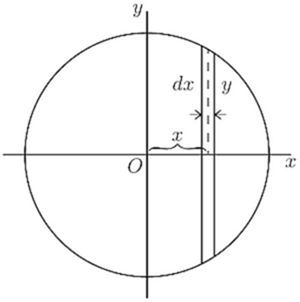
We can also proceed as follows: a slice of the sphere, of thickness , has for volume (see Fig. 62). Also and are related by the expression ![StartLayout 1st Row 1st Column Hence volume sphere 2nd Column equals 2 integral Subscript x equals 0 Superscript x equals r Baseline pi left parenthesis r squared minus x squared right parenthesis d x 2nd Row 1st Column Blank 2nd Column equals 2 pi left bracket integral Subscript x equals 0 Superscript x equals r Baseline r squared d x minus integral Subscript x equals 0 Superscript x equals r Baseline x squared d x right bracket 3rd Row 1st Column Blank 2nd Column equals 2 pi left bracket r squared x minus StartFraction x cubed Over 3 EndFraction right bracket Subscript 0 Superscript r Baseline equals StartFraction 4 pi Over 3 EndFraction r cubed period EndLayout](img/1699.svg)
(2) Find the volume of the solid generated by the revolution of the curve about the axis of , between and .
The volume of a strip of the solid is .
Hence
On Quadratic Means.
In certain branches of physics, particularly in the study of alternating electric currents, it is necessary to be able to calculate the quadratic mean of a variable quantity. By "quadratic mean" is denoted the square root of the mean of the squares of all the values between the limits considered. Other names for the quadratic mean of any quantity are its "virtual" value, or its "R.M.S." (meaning root-mean-square) value. The French term is valeur efficace. If is the function under consideration, and the quadratic mean is to be taken between the limits of and ; then the quadratic mean is expressed as
Examples.
(1) To find the quadratic mean of the function (Fig. 63).
Here the integral is , which is . Dividing by  and taking the square root, we have
and taking the square root, we have
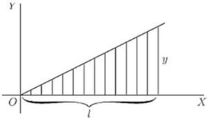
Here the arithmetical mean is ; and the ratio of quadratic to arithmetical mean (this ratio is called the form-factor) is .
(2) To find the quadratic mean of the function .
The integral is , that is .
Hence
(3) To find the quadratic mean of the function .
The integral is , that is , which is .
Hence the quadratic mean is .
Exercises XVIII. (See p. 265 for Answers.)
(1) Find the area of the curve between and , and the mean ordinates between these limits.
(2) Find the area of the parabola between and . Show that it is two-thirds of the rectangle of the limiting ordinate and of its abscissa.
(3) Find the area of the positive portion of a sine curve and the mean ordinate.
(4) Find the area of the positive portion of the curve , and find the mean ordinate.
(5) Find the area included between the two branches of the curve from to , also the area of the positive portion of the lower branch of the curve (see Fig. 30, p. 106).
(6) Find the volume of a cone of radius of base , and of height  .
.
(7) Find the area of the curve between and .
(8) Find the volume generated by the curve , as it revolves about the axis of , between and .
(9) Find the volume generated by a sine curve revolving about the axis of . Find also the area of its surface.
(10) Find the area of the portion of the curve included between and . Find the mean ordinate between these limits.
(11) Show that the quadratic mean of the function , between the limits of 0 and  radians, is . Find also the arithmetical mean of the same function between the same limits; and show that the form-factor is .
radians, is . Find also the arithmetical mean of the same function between the same limits; and show that the form-factor is .
(12) Find the arithmetical and quadratic means of the function , from to .
(13) Find the quadratic mean and the arithmetical mean of the function .
(14) A certain curve has the equation . Find the area included between the curve and the axis of , from the ordinate at to the ordinate at . Find also the height of the mean ordinate of the curve between these points.
(15) Show that the radius of a circle, the area of which is twice the area of a polar diagram, is equal to the quadratic mean of all the values of for that polar diagram.
(16) Find the volume generated by the curve rotating about the axis of .